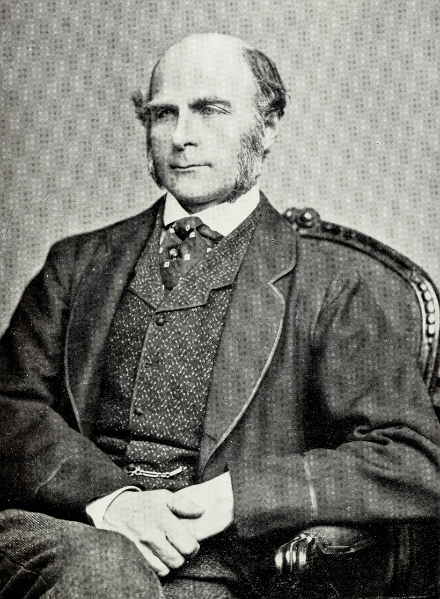
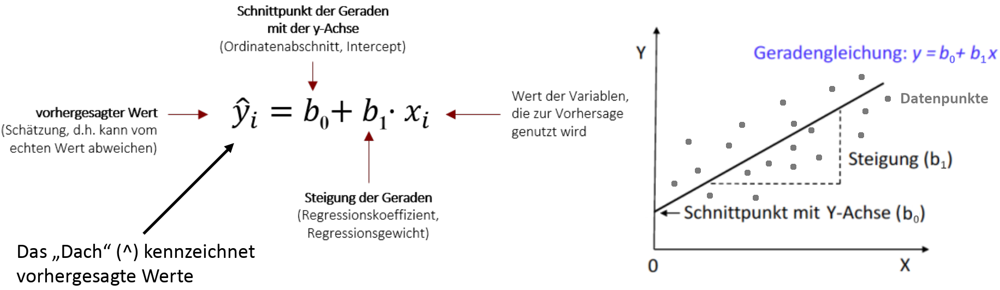
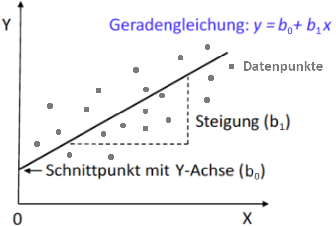
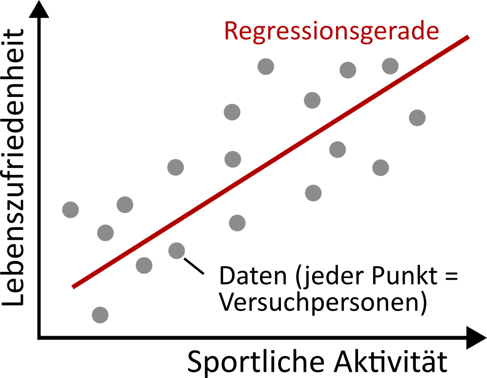
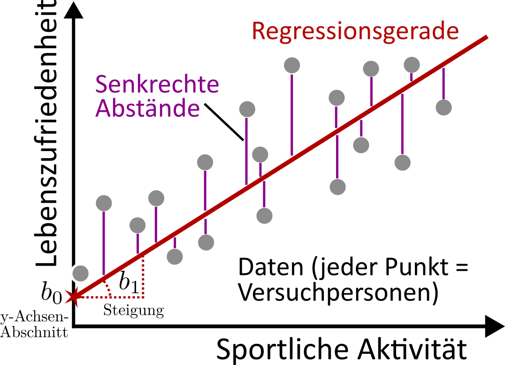
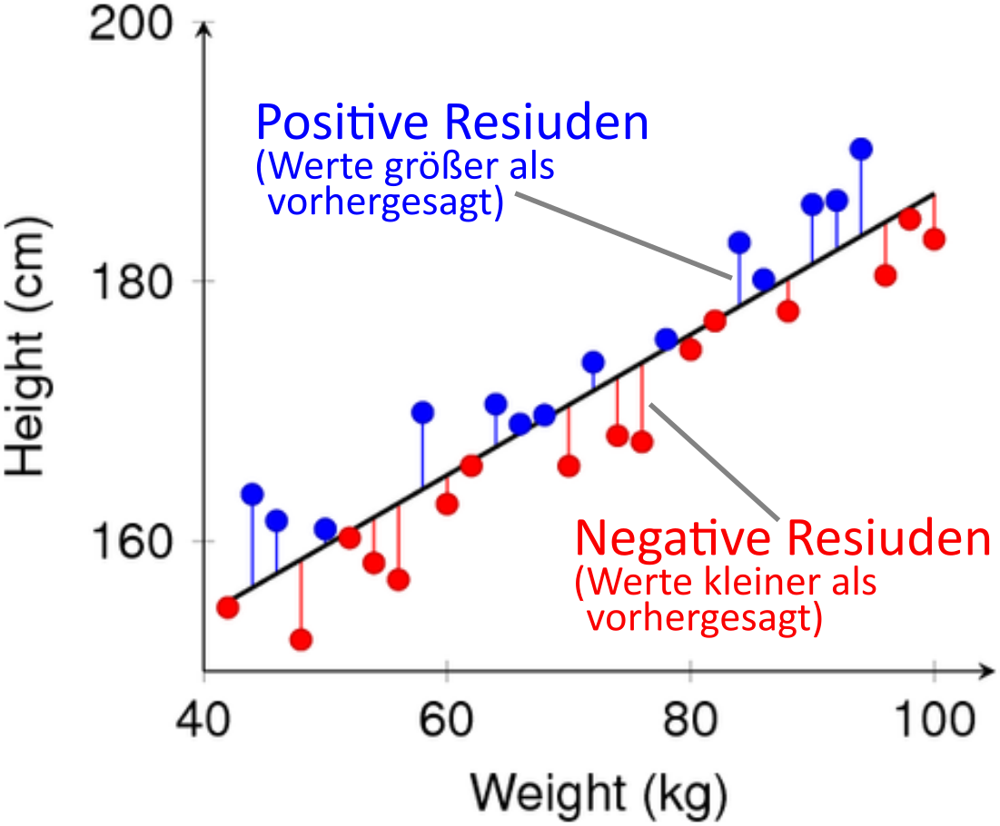
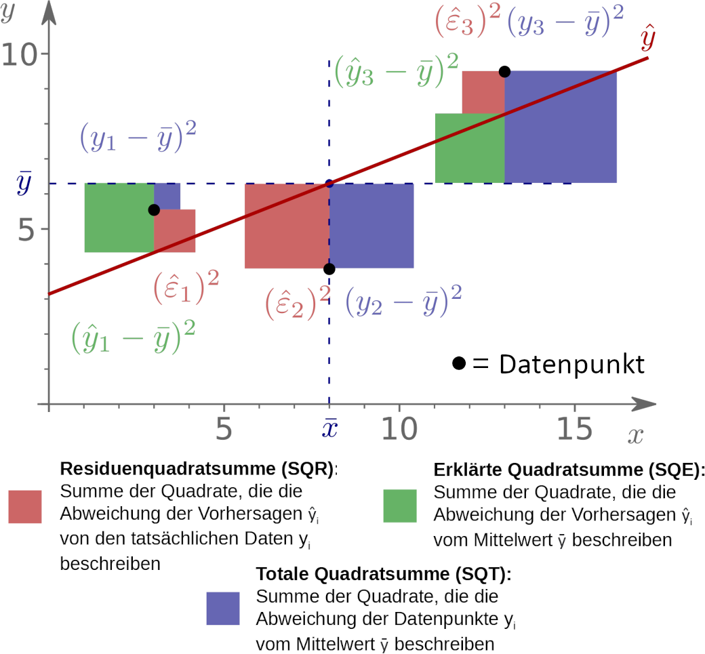

5 Vorlesung 05: Regression
Woher kommt der Ausdruck “Regression”?
- Lateinisch »regredi« = „umkehren, zurückgehen“
- Psychoanalyse: Regression = Zurückfallen in kindliche Verhaltensmuster
Wir heißen es Regression, wenn sich im Traum die Vorstellung in das sinnliche Bild zurückverwandelt, aus dem sie irgend einmal hervorgegangen ist.
Sigmund Freud (1900). “Traumdeutung”.
- In die Statistik wird der Ausdruck “Regression” klassischerweise auf Francis Galton (Cousin von Charles Darwin) attribuiert, der bereits 1885 ein Phänomen beschrieb, das er regression toward mediocrity (Regression zur Mitte) taufte
- Das Phänomen bestand darin, dass Nachfahren großer Eltern dazu tendieren, selbst nur durchschnittlich groß zu werden
- Neuere Forschung zeigt allerdings, dass sich Galton selbst wohl noch nicht des statistischen Ursprungs dieses Phänomens bewusst war und eine biologische Erklärung favorisierte1

Regression
- Dem Wortsinn nach ist Ziel der Regression eine abhängige Variable auf eine oder mehrere unabhängige Variablen zurückzuführen (auf diese zu regredieren)
- Eingängiger ist aber die umgekehrte Formulierung: Ziel der Regression ist es, auf Basis der unabhängigen Variablen die eine abhängige Variable vorherzusagen oder zu erklären
- Abhängige Variable = vorhersagende oder erklärende Variable
- Unabhängige Variable(n) = vorhergesagte oder erklärte Variable(n)

- Beispiel: eine Studie untersucht, ob sich Lebenszufriedenheit auf Basis von sportlicher Aktivität vorhersagen/erklären lässt.
- Lebenszufriedenheit: unabhängige/vorhersagende/erklärende Variable; — sportliche Aktivität: abhängige/vorhergesagte/erklärte Variable
Regression
- Im Gegensatz zur Korrelation bestimmt die Regression nicht die Linearität des Zusammenhangs (vielmehr wird dies vorausgesetzt), sondern die Steigung des Zusammenhangs
- Aus diesem Grund ist die Regression (wieder im Gegensatz zur Korrelation) nicht symmetrisch – die Steigung ist abhängig davon welche Variable als abhängig und unabhängig deklariert wird.
- Aus mathematisch etwas komplizierteren Gründen ist es nicht einmal gestattet die Regressionsgleichung zu invertieren ( \(\hat{x}_i = \frac{1}{b_1}y_i-\frac{b_0}{b_1}\)) — im Allgemeinen ist \(\frac{1}{b_1}\) nicht die Steigung, wenn die Rollen von X und Y vertauscht werden.

- Die Vorhersage/Erklärung von X durch Y geschieht durch eine Gleichung – die Regressionsgleichung – die im Streudiagramm als Gerade eingezeichnet werden kann.

Bestimmung der Regressionsgerade: Methode der kleinsten Quadrate
- Ziel der Regression ist es, die Gerade zu finden, die die Datenpunkte möglichst gut abbildet — es gibt jedoch verschiedene Definitionen dessen, was “möglichst gut” heißt
- Die häufigste Variante ist die Methode der kleinsten Quadrate, bei der die Gerade so gewählt wird, dass die Summe der quadrierten senkrechten Abstände jedes Datenpunktes zur Geraden minimal ist
- Engl. ordinary least square

- Die einfache Regression mit nur einer unabhängigen Variablen hat zwei freie Parameter, um die Gerade an die Datenpunkte anzupassen (zu “fitten”):
- y-Achsenabschnitt \(b_0\) (engl. intercept)
- Steigung \(b_1\) (engl. slope)
- Exakt 0 wären die senkrechten Abstände nur, wenn alle Punkte auf einer perfekten Gerade liegen. Dies ist eigentlich nie der Fall. Die verbleibenden senkrechten Abstände der Datenpunkte von der gefitteten Geraden werden Residuen genannt.
Warum weichen die Datenpunkte überhaupt von einer Geraden ab?
Verschiedene Gründe:
- Variablen korrelieren überhaupt nicht
- Einfluss von Störvariablen
- Messungenauigkeit

In der Psychologie gibt es (bis auf triviale Fälle) keine perfekten linearen Zusammenhänge, d.h. es verbleiben immer Residuen \(\Delta \hat{y_i}\):
\[ \text{Residuum:}\quad \Delta \hat{y_i} = \hat{\epsilon}_i = \hat{y_i} - y_i \]

Residuum = Differenz von vorhergesagtem Wert \(\hat{y_i}\) und tatsächlichem Wert \(y_i\)
Totale, erklärte und Residuenquadratsumme
- Die Methode der kleinsten Quadrate minimiert die Residuenquadratsumme (SQR): \[ SQR = \sum\left(\hat{y}_i-y_i\right)^2 = \sum\hat{\epsilon}_i^2 \]
- Diese wiederum lässt sich in Bezug setzen zur totalen Quadratsumme (SQT) und zur erklärten Quadratsumme (SQE):
\[ SQR = SQT - SQE\qquad\text{bzw.} \] \[ SQT = SQT + SQR \]
- Mit
\[ SQE = \sum\left(\hat{y}_i-\bar{Y}\right)^2 \]
\[ SQT = \sum\left(y_i-\bar{Y}\right)^2 \]

- Falls alle Punkte exakt auf der Regressionsgeraden liegen (\(\hat{y}_i = y_i\)) ist die erklärte Quadratsumme identisch der totalen Quadratsumme (\(SQE = SQT\)) und die Residuenquadratsumme ist 0
Bestimmtheitsmaß
- Das Bestimmtheitsmaß \(R^2\) gibt an, wie gut die Datenpunkte durch die Regressionsgerade gefittet werden (“Anpassungsgüte”)
- Es gibt an, welcher Anteil der Datenvarianz \(Var(y)\) durch die Varianz der Vorhersage \(Var(\hat{y})\) erklärt wird..
\[ R^2 = \frac{Var(\hat{y})}{Var(y)} = \frac{\sum\left(\hat{y_i}-\bar{Y}\right)^2}{\sum\left(y_i-\bar{Y}\right)^2} = \frac{SQE}{SQT} \]
- .. oder äquivalent, den Anteil der erklärten Quadratsumme an der totalen Quadratsumme.